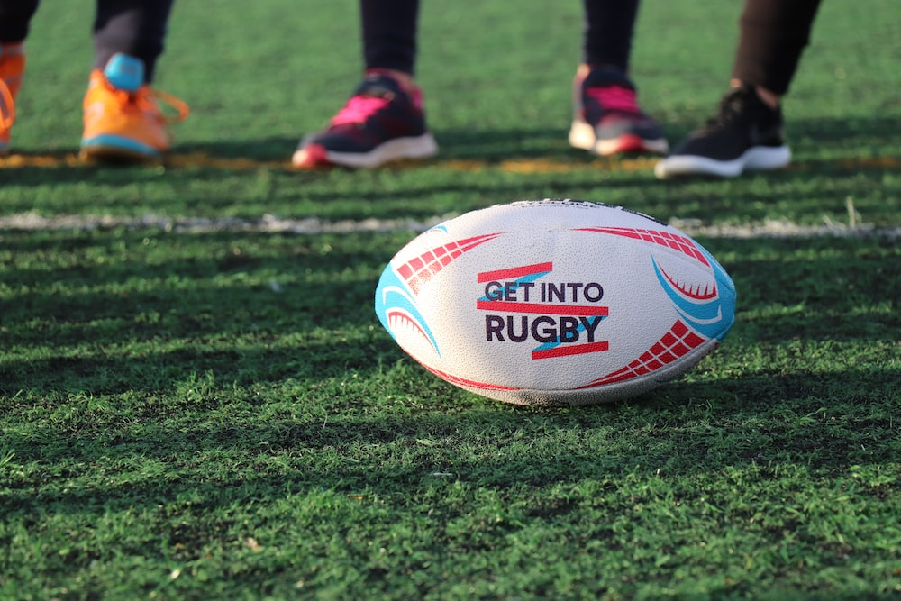
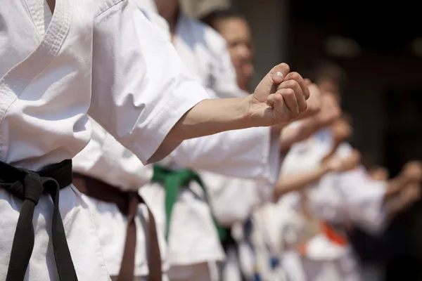
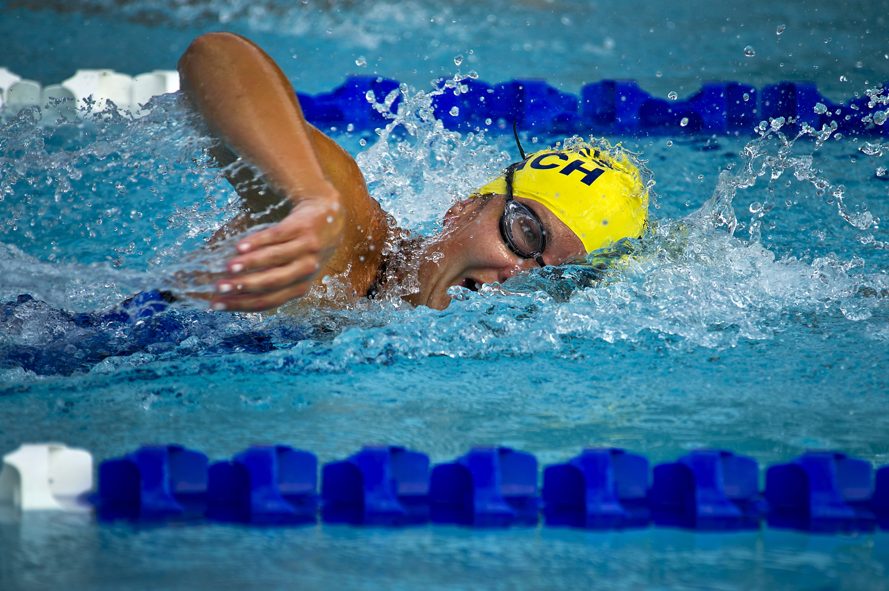

Sports Offered by Us
Badminton
At Greendale University, badminton is a popular racquet sport enjoyed by students and faculty alike. It provides a fantastic opportunity for individuals to engage in friendly competition, maintain an active lifestyle, and build lasting friendships. The university boasts a vibrant badminton community with players of all skill levels coming together to play and improve their game. Greendale University Badminton Team: The university takes pride in its competitive badminton team, known as the "Greendale Shuttle Smashers." Comprising skilled athletes and passionate players, the team competes in various inter-university tournaments and represents the university with great enthusiasm and sportsmanship.

Rugby
At Greendale University, rugby holds a special place as the sport with a rich history that traces its origins to the prestigious Rugby School. Rugby, also known as rugby union, is a dynamic and close-contact team sport that has captivated players and fans for over a century. The university takes immense pride in nurturing this traditional sport and providing a platform for students of all backgrounds to come together and experience the thrill of rugby. Rugby at Greendale University: The university's rugby program, known as the "Greendale Rugby Rovers," embodies the spirit of teamwork, determination, and sportsmanship. The rugby team consists of dedicated players who are passionate about the game and strive to represent the university with the utmost dedication and integrity.
Cricket
Cricket at Greendale University is a captivating bat-and-ball sport that brings together two teams of eleven players each on a lush field, featuring the iconic wicket at each end. The game's rich history and thrilling gameplay have made it a beloved pastime for students and cricket enthusiasts at the university. Greendale Cricket Club: The university takes great pride in its cricket tradition, nurturing a strong cricket community through the esteemed "Greendale Cricket Club." The club offers opportunities for both seasoned players and novices to come together, learn, and revel in the spirit of the sport.

Volleyball
Volleyball is an exhilarating team sport played between two teams, each typically consisting of six players. The game revolves around skillfully using hands to volley a ball back and forth over a high net, with the ultimate goal of landing it within the opponent's playing area before they can return it. Let's explore the dynamic world of volleyball at Greendale University. Volleyball at Greendale University: At Greendale University, volleyball holds a special place in the hearts of students and sports enthusiasts. The university's volleyball program, known as the "Greendale Spikers," embodies the spirit of teamwork, agility, and strategic play.

Karate
Karate, a captivating form of unarmed martial arts, embodies the essence of "empty hand" techniques, incorporating powerful kicking, hitting, and defensive blocking with the arms and legs. At Greendale University, the art of karate is not only a physical practice but also a discipline that cultivates mental focus and inner strength. Karate at Greendale University: Greendale University takes pride in its esteemed karate program, where students immerse themselves in the rich traditions and techniques of this ancient martial art. The university's karate practitioners are known as the "Greendale Warriors," displaying dedication, skill, and unwavering spirit in their pursuit of mastery.
Swimming
At Greendale University, swimming is a beloved sport that encompasses both recreational enjoyment and competitive excellence. This all-around body builder utilizes a harmonious combination of arm and leg movements, coupled with the body's inherent buoyancy, to propel swimmers through the water with grace and precision. Swimming at Greendale University: The university takes great pride in its vibrant swimming community, where students, faculty, and staff alike embrace the therapeutic benefits and exhilarating challenges of swimming. Whether for leisurely laps or competitive meets, the university's swimming program fosters a love for the water and a commitment to physical fitness.
